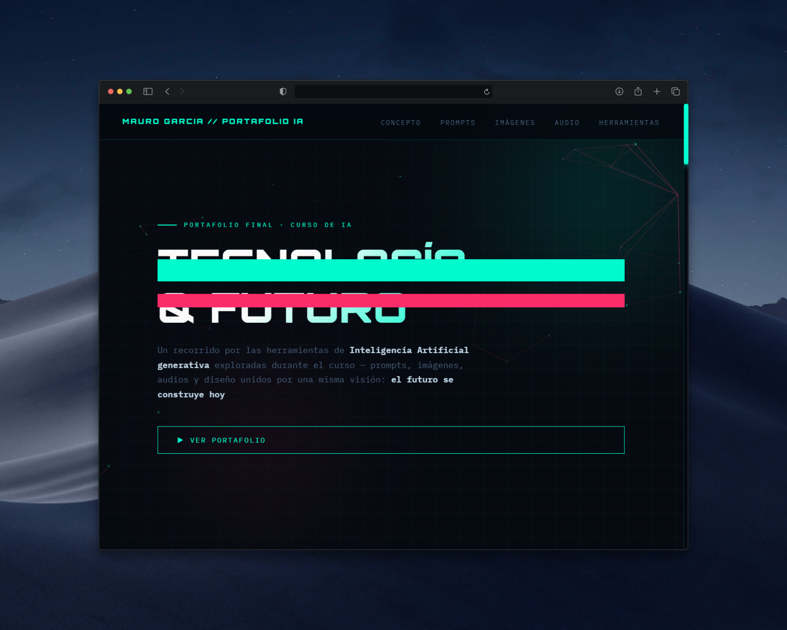

SJG Omisiones
↗Sistema de control de asistencia para operarios en planta Ternium. Permite auditar y corregir errores en fichajes, eliminando duplicidad de datos en tiempo real.
Especializado en la creación de interfaces modernas, dinámicas y centradas en la experiencia del usuario. Experto en React, Node.js y .NET, enfocado en escribir código limpio y orientado a la resolución de problemas.
Gestión de horas y control de asistencia in-situ. Mejora de la precisión en registros mediante controles más claros y desarrollo de reportes internos analíticos para optimizar procesos disciplinarios y administrativos.
Desarrollo end-to-end con React, Next.js, Node.js y C#. Implementación de APIs REST, autenticación (JWT) y manejo de estados en proyectos colaborativos bajo metodologías ágiles.
Formación académica en fundamentos de algoritmos, estructuras de datos y lógica. Desarrollo sólido con C# y .NET Core, modelado de bases de datos relacionales y arquitectura de computadoras.
Dominio en la construcción de interfaces escalables e interactivas.
Desarrollo de servicios robustos y sistemas distribuidos eficientes.
Modelado de datos y consultas complejas para alto rendimiento.
Gestión de flujo de trabajo, autenticación y despliegue.
Sistema de control de asistencia para operarios en planta Ternium. Permite auditar y corregir errores en fichajes, eliminando duplicidad de datos en tiempo real.

Plataforma de reservas online para negocios de estética. Incluye gestión de turnos automática, panel de administración para el dueño y base de datos en tiempo real.

Sitio institucional corporativo diseñado con un enfoque en SEO técnico y rendimiento óptimo para facilitar la captación de clientes B2B en el sector industrial.

E-commerce gastronómico interactivo. Cuenta con un proceso de compra simplificado y micro-interacciones que mejoran la retención del usuario.

Landing page de alto impacto visual para consultoría tecnológica. Implementa una estética futurista y componentes dinámicos para presentar servicios AI.

Catálogo digital premium especializado en productos Apple. Interfaz minimalista orientada a destacar la calidad de los dispositivos e incentivar el contacto.
Disponible para desarrollo corporativo, aplicaciones a medida y automatizaciones eficientes.
Contactar vía Email